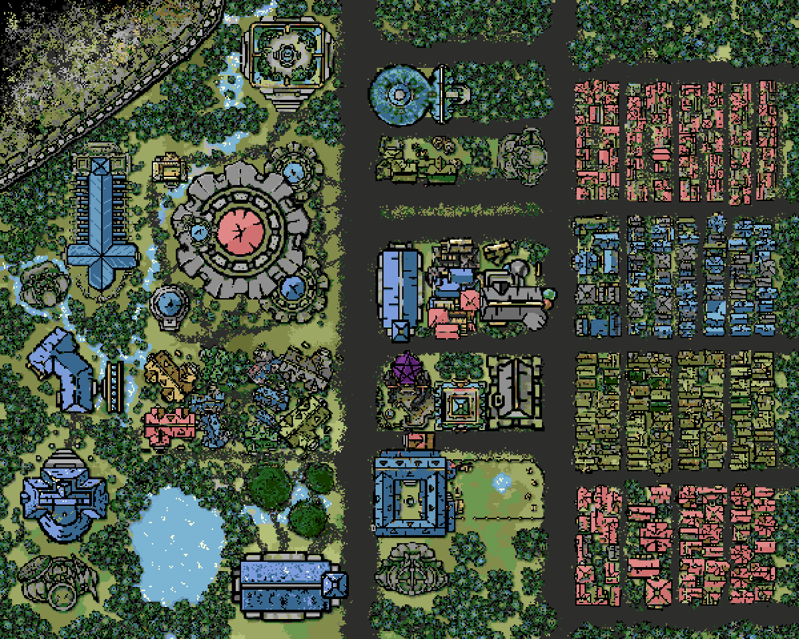
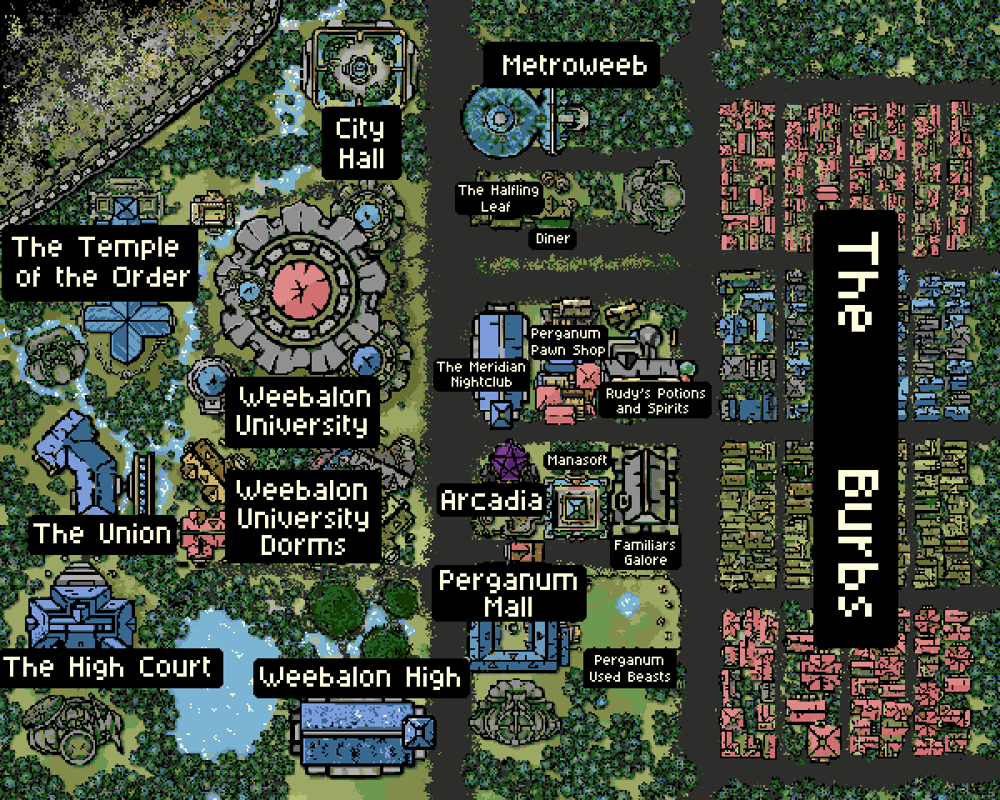

The Clock
Two sister planets drift closer every eon. When they touch, the wall between worlds thins and the rifts open. This is the last one.
the Final Eon
◆ ——————————— ◆ ——————————— ◆


Two sister planets drift closer every eon. When they touch, the wall between worlds thins and the rifts open. This is the last one.
Perganum runs on magic the way other cities run on electricity. Trolleys, convenience stores, a mall — and a wall holding back the Abyss.
Weebalon University trains Chosen Ones. Four years on Edin, six more on Ioto, if you live that long.